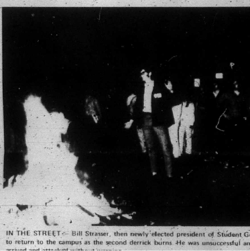
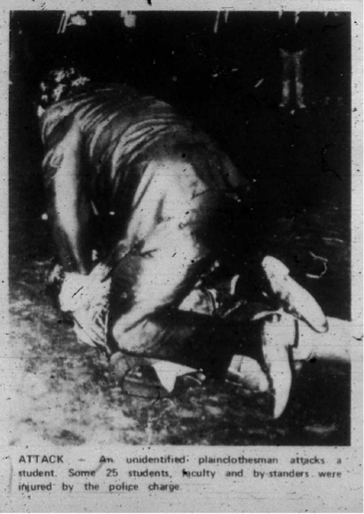

At Seton Hall on May 5th, students occupied Bayley Hall and ransacked ROTC headquarters. That evening, students protested on and off campus. A WSOU radio report documented the events, including interviews with student leaders, faculty members, and administrators in a news report with Jerry Criqui on WSOU, Seton Hall’s radio station. The report interviewed Bill Strasser, President of the Student Government, and several faculty members. According to Student Government President Bill Strasser, the protest was organized in remembrance of the students of Kent State and the use of extreme force. The night began as peaceful protests of college students.
Students eventually set the oil derricks built by Phi Kappa Theta on fire and began to block traffic at the intersection of Ward Place and South Orange Avenue. As students began to block everyday activities of South Orange citizens, South Orange police reported to the scene along with adults armed with baseball bats. The police conducted two charges of the protestors to attempt to break up the gathered crowd. It estimates that eleven students and faculty members were injured in the charges. Strasser described that “Seton Hall is a much more radical place today; I would think, than it ever was after last night.” During the report, multiple professors noted the extreme force used by the police. One officer was quoted as saying, “It appears to me the wounded have all been taken away; it appears we’ll have to make some more”.


The protests marked a turning point in campus dynamics. The day after the protests, university President Thomas Fahy cancelled all remaining finals for the term and called for students to remain peaceful, to limit the suffering of everyone. As opposed to his predecessor, Fahy “expressed sympathy with students who oppose the war in Vietnam and said that he would probably lend his name and office to anti-war efforts”. A student representative of ROTC students called to keep school open for the rest of the semester. He described the events of the protest as “gross”. At the time of the WSOU report, a group of students maintained the occupation of Bayley Hall.